Forecasting Influenza Cases in Australia Using SARIMA and Exponential Smoothing Models
Author
Natalie Chidikwindi
Introduction
Influenza is a respiratory illness characterized by symptoms such as fever, headache, sore throat and cough. It spreads rapidly and causes seasonal epidemics, which can increase mortality and place additional pressure on healthcare systems. Identifying periods during which influenza cases are likely to increase can help healthcare providers and the public prepare more effectively.
Forecasting future influenza cases can support this planning by providing estimates of expected case numbers over time. Seasonality is particularly important in influenza dynamics because case numbers tend to rise during particular periods of the year. Accurate forecasts may therefore assist with resource planning, public-health communication and intervention strategies.
This project is a comparative time-series study that evaluates two modelling approaches for describing and forecasting monthly influenza notifications in Australia. The first approach uses seasonal autoregressive integrated moving average (SARIMA) models, while the second uses exponential smoothing state-space (ETS) models. The project aims to determine which approach provides a more suitable model of historical influenza notifications and produces more accurate out-of-sample forecasts.
The project addresses the following research questions:
Which model, SARIMA or exponential smoothing, produces more accurate out-of-sample forecasts of monthly influenza notifications? -
Do the selected SARIMA and ETS models produce residuals that are approximately uncorrelated, indicating that the main temporal structure in the data has been captured?
Data & Preparation
The data used in this project were obtained from the Australian National Notifiable Disease Surveillance System (NNDSS) and cover the period from 1 January 2008 to 31 December 2019. The original dataset contains weekly influenza notifications, with weeks ending on a Friday. Cases are recorded according to state or territory, age group, sex, Indigenous status and influenza subtype.
Click to expand code
#packages for codinglibrary(tidyverse) # for clean data manipulationlibrary(readxl) # to read in an excel spreadsheet because my data is a spreadsheetlibrary(tsibble) # time series modellinglibrary(lubridate) # date manipulationlibrary(ggplot2) # plotting#time series plottinglibrary(fabletools)library(feasts)library(fable)#importing the 4 sheets of data into Rnd1 <-read_excel('nndss-public-dataset-influenza-laboratory-confirmed.xlsx', sheet ='2008-2015', skip =1)nd2 <-read_excel('nndss-public-dataset-influenza-laboratory-confirmed.xlsx', sheet ='2016-2018', skip =1)nd3 <-read_excel('nndss-public-dataset-influenza-laboratory-confirmed.xlsx', sheet ='2019-2021', skip =1)nd4 <-read_excel('nndss-public-dataset-influenza-laboratory-confirmed.xlsx', sheet ='2022-2024', skip =1)#combined into 1 data framenndss_data <-rbind(nd1, nd2, nd3, nd4)# filtered the data to stop and the end of 2019.nndss_data <- nndss_data |>filter(`Week Ending (Friday)`<='2019-12-31')# aggregated the data to give the total number of flu cases regardless of the flu typenndss_data <- nndss_data |>group_by(`Week Ending (Friday)`) |>summarise(Flu_Cases =n())
For this project, the weekly records were aggregated to produce the total number of laboratory-confirmed influenza notifications per month. The data were not separated by state or territory, age group, sex, Indigenous status or influenza subtype. This aggregation was chosen because the aim of the project was to model and forecast national monthly influenza patterns.
It is important to note that notification data may underestimate the true number of influenza infections in the community. A case is included only if an individual seeks healthcare, is tested, receives a diagnosis and the case is subsequently reported to health authorities. The extent of under-reporting is unknown and may vary over time, by jurisdiction and by influenza subtype.
After aggregation, the final dataset contained 144 monthly observations, covering January 2008 to December 2019. No missing values were identified in the final aggregated dataset.
Exploratory data Analysis
The weekly influenza notification data were aggregated into monthly and yearly totals to examine broad patterns in influenza notifications over time.
Figure 1: Yearly and Monthly Influenza Cases in Australia (2008–2019)
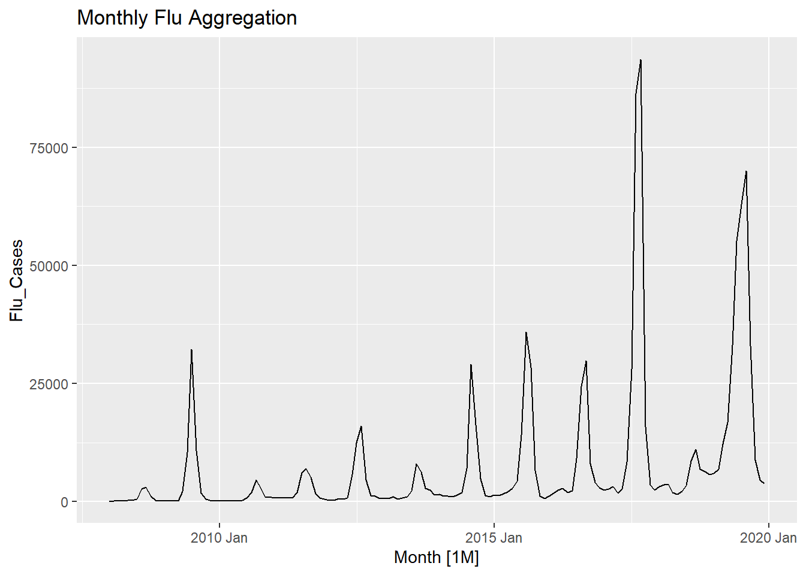
Figure 2: Yearly and Monthly Influenza Cases in Australia (2008–2019)
The monthly series shows a clear seasonal pattern. Influenza notifications generally increase during the middle of the year, reach a peak during the Australian winter months, and then decline towards the end of the year and the beginning of the following year. The yearly totals suggest an overall increase in reported influenza notifications over the study period, although this trend is not smooth. Large peaks are visible in 2009, 2017 and 2019, while the total number of notifications declined sharply in 2018.
The peak in 2009 coincides with the H1N1 influenza pandemic and may have been partly explained by the rapid spread of this strain. The high notification count in 2017 may have been influenced by factors such as circulating influenza strains, vaccine effectiveness, healthcare-seeking behaviour, testing practices and reporting patterns. Similarly, the increase in 2019 may have reflected differences in circulating strains, population immunity, vaccination coverage or surveillance practices. However, the NNDSS data used in this project do not include the additional information required to determine the specific causes of these increases. These explanations should therefore be regarded as possible contributors rather than confirmed causes.
Seasonal plots were used to assess whether the timing and magnitude of seasonality remained consistent over the study period.
Click to expand code
#shows weekly and monthly time series spread of flu cases#monthly seasonalityflu_data_monthly |>gg_season(Flu_Cases, period ="year")+labs(title ="Monthly seasonality")#weekly seasonalityflu_data_weekly |>gg_season(Flu_Cases, period ="year")+labs(title ="Weekly seasonality")
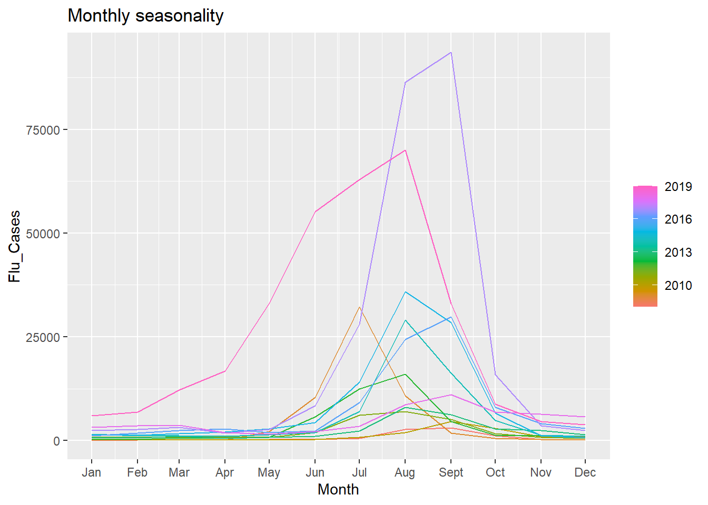
Figure 3: Seasonal Distributions Across Monthly and Weekly Frequencies
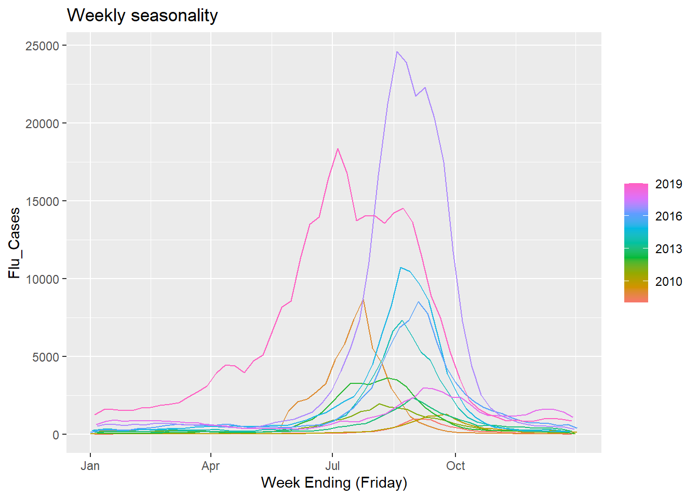
Figure 4: Seasonal Distributions Across Monthly and Weekly Frequencies
The seasonal plots confirm that influenza notifications tend to rise during the middle of each year. However, the size of the seasonal peak differs across years. Earlier years, particularly from approximately 2010 to 2013, show relatively similar seasonal patterns, whereas the peaks in 2017 and 2019 are substantially larger. This suggests that the timing of influenza seasonality is fairly consistent, but the magnitude of the seasonal effect varies over time.
The subseries plot provides a clearer view of the average monthly pattern.
Click to expand code
# sub-series plot (shows plot of monthly data from 2008 -2019)flu_data_monthly |>gg_subseries(Flu_Cases)+labs(title ="Monthly Sub-series Plot")
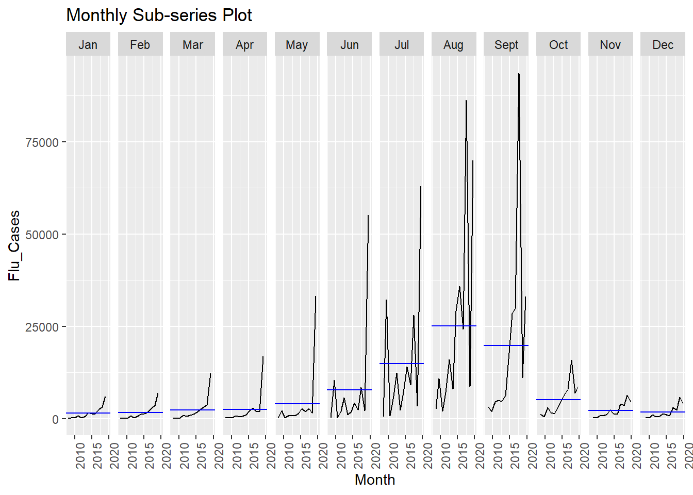
Figure 5: Monthly Subseries Distribution of Influenza Notifications
Influenza notifications begin to increase from approximately June, are highest on average in August, and then generally decline until October. This pattern is consistent with the timing of the Australian winter, which occurs mainly from June to August.
To separate the observed series into its underlying components, an STL decomposition was applied.
Click to expand code
# STL decomposition into trend, seasonality, residuals and full plotflu_data_monthly |>model(STL(Flu_Cases ~trend() +season(period ="1 year"))) |>components() |>autoplot() +theme_minimal()+labs(title ="STL Decomposition of Monthly Flu Cases")
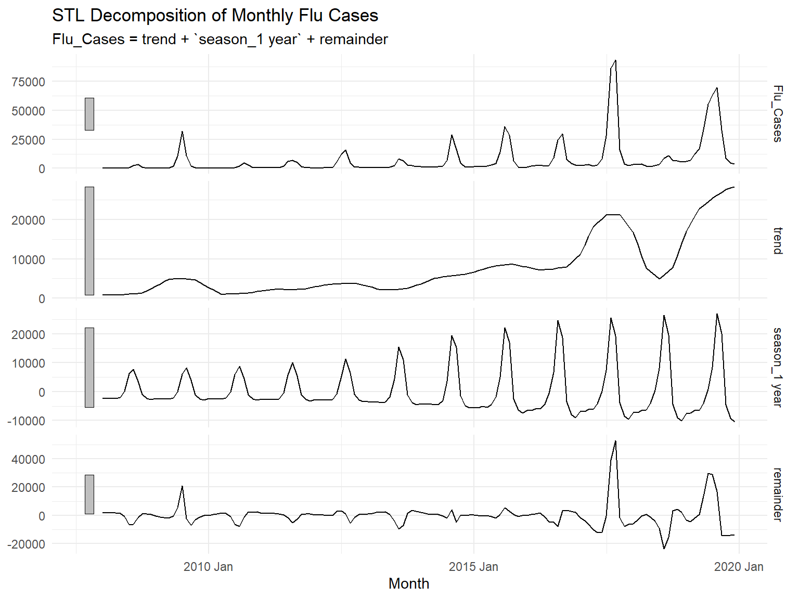
Figure 6: STL Decomposition of Monthly Influenza Notifications
The trend component is non-linear, with marked departures from the general pattern around 2009, 2017 and 2019. The seasonal component shows increasing variation over time, suggesting that the seasonal amplitude may be proportional to the level of the series. This indicates that the data may display multiplicative seasonal behaviour.
The remainder component fluctuates around zero for much of the series but contains large deviations in years with unusually high notification counts. These deviations indicate that events or factors other than the usual trend and seasonal pattern may have affected influenza notifications during those years.
Overall, the exploratory analysis provides evidence of strong annual seasonality, changing seasonal amplitude and a non-linear long-term pattern. These characteristics motivated the use of both SARIMA and ETS models.
Train–Test Split and Variance Stabilisation
To compare forecasting performance, the monthly influenza data were divided into training and test sets using an approximately 80:20 split. The training set covers January 2008 to December 2017 and contains 120 monthly observations. The test set covers January 2018 to December 2019 and contains 24 monthly observations.
This split was selected because the test set contains two complete annual seasonal cycles. It therefore allows model performance to be evaluated across more than one influenza season. Keeping the final two years as the test set also provides an out-of-sample evaluation period that includes the substantial increase in notifications observed in 2019.
Click to expand code
# Split into test and train set# 2008- 2017train_data <- flu_data_monthly |>filter_index(. ~"2017 Dec")#2018 - 2019test_data <- flu_data_monthly |>filter_index("2018 Jan"~ .)
Before fitting SARIMA models, a variance-stabilising transformation was considered. The exploratory analysis suggested that the seasonal amplitude increased as the level of the series increased. This indicates multiplicative seasonality and suggests that the variance may not be constant over time.
The Box–Cox transformation is defined as \[y_t^{(\lambda)} =
\begin{cases}
\dfrac{y_t^\lambda - 1}{\lambda}, & \lambda \neq 0, \\[8pt]
\log(y_t), & \lambda = 0,
\end{cases}\]
where \(y_t\) is the original number of influenza notifications in month \(t\), \(y_t^{(\lambda)}\) is the transformed value, and \(\lambda\) is the transformation parameter. When \(\lambda=1\), the data remain approximately on their original scale. When \(\lambda=0\), the transformation becomes the natural logarithm, provided that \(y_t > 0\).
The optimal value of \(\lambda\) was estimated using the Guerrero method on the training data only. The test data were excluded from this step to prevent information leakage. Estimating the transformation parameter using only the training data ensures that the modelling procedure reflects the information that would have been available at the end of 2017.
Click to expand code
# calculating optimal lambdaoptim_lambda <- train_data |>features(Flu_Cases, features = guerrero)# performing a log transform on the data using the optimal lambda value#training datatrain_trans <- train_data |>mutate(Flu_Cases_Trans =box_cox(Flu_Cases, lambda = optim_lambda$lambda_guerrero)) |>select(Month, Flu_Cases_Trans)#test datatest_trans <- test_data |>mutate(Flu_Cases_Trans =box_cox(Flu_Cases, lambda = optim_lambda$lambda_guerrero)) |>select(Month, Flu_Cases_Trans)
The estimated Guerrero value was \(\lambda = -0.07\), which is close to zero. A logarithmic transformation was therefore used as a simple and interpretable approximation to the Box–Cox transformation: \[y_t^{(0)} = \log(y_t).\]
Click to expand code
train_trans |>autoplot(Flu_Cases_Trans)+labs(title ="Tranformed Monthly training data")train_trans |>gg_season(Flu_Cases_Trans, period ="year") +labs(title ="Transformed Seasonality")
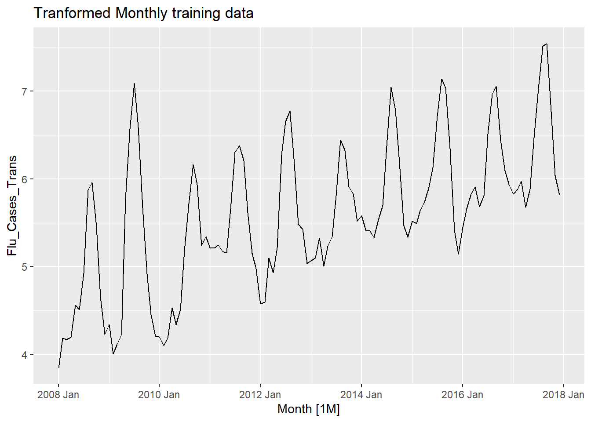
Figure 7: Transformed Training Series and Seasonality Plots
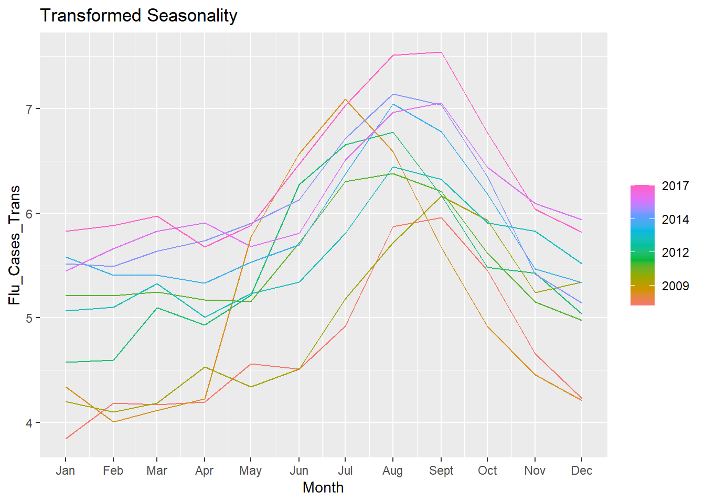
Figure 8: Transformed Training Series and Seasonality Plots
Compared with the original series, the seasonal peaks are more similar in size after transformation, suggesting that the variance has been stabilized. The transformed series still displays an upward movement over time, while the 2009 peak remains noticeably unusual.
An STL decomposition was then applied to the transformed training data.
Figure 9: STL Decomposition of the Transformed Training Data
The trend component appears more gradual than in the original series, and the seasonal component shows a more consistent pattern across years. Although the remainder fluctuates around zero for much of the series, the large deviation around 2009 remains visible.
The transformed series was used for SARIMA modelling because the model requires the series to be made approximately stationary through transformation and differencing. The original series was retained for ETS modelling because ETS models can directly accommodate evolving level and seasonal components.
SARIMA Model Fitting
Seasonal autoregressive integrated moving-average (SARIMA) models extend ordinary ARIMA models by allowing both non-seasonal and seasonal patterns to be modelled. The autoregressive (AR) component models the current value of a time series using previous values. The moving-average (MA) component models the current value using previous forecast errors. The integrated (I) component refers to differencing, which can be used to remove non-stationary behaviour.
A SARIMA model is written as \[\text{SARIMA}(p,d,q)(P,D,Q)_s.\] The non-seasonal component, \((p,d,q)\), captures short-term patterns in the series, while the seasonal component, \((P,D,Q)_s\), captures repeating patterns after each seasonal cycle. Since the data are monthly and influenza seasonality occurs annually, the seasonal period is \(s=12\).The general form of a SARIMA model is \[\Phi_P(B^s)\phi_p(B)(1-B)^d(1-B^s)^D y_t = \Theta_Q(B^s)\theta_q(B)\varepsilon_t.\] Here, \(y_t\) denotes the transformed influenza series at time \(t\), \(B\) is the backshift operator (\(By_t=y_{t-1}\), \(B^{12}y_t=y_{t-12}\)) and \(\varepsilon_t\) is a random error term.
Click to expand code
train_trans|>features(Flu_Cases_Trans, features =c(unitroot_ndiffs, unitroot_nsdiffs, unitroot_kpss))
The initial test results indicated that one seasonal difference (\(D=1\)) and one non-seasonal difference (\(d=1\)) may be required. In addition, the small KPSS \(p\)-value provided evidence against the null hypothesis of stationarity.
Seasonal differencing was applied first because the exploratory analysis showed strong annual seasonality:
\[(1-B^{12})y_t = y_t - y_{t-12}.\]
Click to expand code
sdiff_dat <- train_trans |>mutate(season_diff =difference(Flu_Cases_Trans, lag =12))#test for stationaritysdiff_dat |>features(season_diff, features =c(unitroot_ndiffs, unitroot_nsdiffs, unitroot_kpss))
The results indicated that no further seasonal or non-seasonal differencing was required (\(d=0, D=1\)). The larger KPSS \(p\)-value indicated that there was insufficient evidence to reject the null hypothesis of stationarity.
Candidate Model Selection
Autocorrelation function (ACF) and partial autocorrelation function (PACF) plots of the seasonally differenced training series were used to identify plausible autoregressive and moving-average orders.
Figure 10: ACF and PACF Diagnostics for Seasonally Differenced Training Data
The PACF showed significant non-seasonal spikes at lags 1 and 2, suggesting a non-seasonal autoregressive order of 2. The ACF and PACF also showed structure around the seasonal lag of 12 months.The initial baseline model was specified as \[\text{SARIMA}(2,0,0)(1,1,0)_{12}.\] Because identifying AR and MA orders from ACF and PACF plots involves visual judgement, additional plausible models were fitted. An automatically selected ARIMA model was also fitted as a data-driven comparison.
Candidate models were specified and compared using AIC, AICc, and BIC metrics.
Click to expand code
# all the sarima models chosen and fitted sarima_models <- train_trans |>model(baseline =ARIMA(Flu_Cases_Trans ~pdq(2,0,0) +PDQ(1,1,0)),baseline_nc =ARIMA(Flu_Cases_Trans ~0+pdq(2,0,0) +PDQ(1,1,0)),model1 =ARIMA(Flu_Cases_Trans ~pdq(2,0,1) +PDQ(1,1,0)), model1_nc =ARIMA(Flu_Cases_Trans ~0+pdq(2,0,1) +PDQ(1,1,0)),model2 =ARIMA(Flu_Cases_Trans ~pdq(2,0,1) +PDQ(0,1,1)),model2_nc =ARIMA(Flu_Cases_Trans ~0+pdq(2,0,1) +PDQ(0,1,1)),model3 =ARIMA(Flu_Cases_Trans ~pdq(2,0,0) +PDQ(2,1,0)),model3_nc =ARIMA(Flu_Cases_Trans ~0+pdq(2,0,0) +PDQ(2,1,0)),auto_stepwise =ARIMA(Flu_Cases_Trans),auto_search =ARIMA(Flu_Cases_Trans, stepwise =FALSE) )# Rank models by AIC to find the best fitsarima_models |>glance() |>arrange(AICc) |>select(.model, AIC, AICc, BIC) |> knitr::kable()
.model
AIC
AICc
BIC
model3
52.59838
53.43007
68.69117
auto_stepwise
52.59838
53.43007
68.69117
auto_search
52.59838
53.43007
68.69117
model2
60.60932
61.19755
74.01997
model2_nc
60.60932
61.19755
74.01997
baseline
63.61479
64.20303
77.02545
baseline_nc
70.61361
71.00196
81.34214
model1
72.60653
73.19476
86.01718
model1_nc
72.60653
73.19476
86.01718
The model with the strongest in-sample fit was Candidate 3, \(\text{SARIMA}(2,0,0)(2,1,0)_{12}\), which obtained the lowest AIC, AICc, and BIC values. Its model equation is: \[(1 - \phi_1 B - \phi_2 B^2)(1 - \Phi_1 B^{12} - \Phi_2 B^{24})(1 - B^{12})y_t = \varepsilon_t.\] The selected SARIMA model was subsequently assessed using residual diagnostics and out-of-sample forecasting performance.
Exponential smoothing
The second family of models fitted to the influenza data was exponential smoothing state-space models. These models were considered because the exploratory analysis showed strong annual seasonality and an evolving level over time. ETS models describe the series through evolving level, trend, and seasonal components.
The notation for an ETS model is \[\text{ETS}(E,T,S),\] where \(E\) denotes the error component, \(T\) denotes the trend component, and \(S\) denotes the seasonal component. Each component may be additive (\(A\)), multiplicative (\(M\)), or absent (\(N\)). The trend component may also be damped (\(A_d\)).
The exploratory analysis indicated that the size of the seasonal influenza peaks increased when the overall number of notifications was higher. Therefore, models with multiplicative seasonality were fitted. Models with both additive and multiplicative errors were evaluated because the residual plots did not provide conclusive evidence regarding the error structure.
Simple exponential smoothing models were not explored because they contain neither a trend nor a seasonal component. Instead, models with additive, damped additive, and absent trend components were evaluated.
The selected model was \(\text{ETS}(M,N,M)\), which features multiplicative errors, no explicit trend component, and multiplicative seasonality. Its observation equation is \[y_t = \ell_{t-1} s_{t-m} (1 + \varepsilon_t),\] where \(y_t\) is the observed value, \(\ell_{t-1}\) is the level at time \(t-1\), \(s_{t-m}\) is the seasonal index from the previous seasonal cycle, \(m = 12\) is the seasonal period, and \(\varepsilon_t\) is the multiplicative error.
The level updating equation is \[\ell_t = \ell_{t-1} (1 + \alpha \varepsilon_t),\] and the seasonal updating equation is \[s_t = s_{t-m} (1 + \gamma \varepsilon_t).\] The \(h\)-step-ahead forecast is given by \[\hat{y}_{t+h\mid t} = \ell_t s_{t+h-m(k+1)},\] where \(k\) is the integer part of \((h-1)/m\). The parameters \(\alpha\) and \(\gamma\) represent the level and seasonal smoothing parameters, respectively.
The candidate model comparison shows that Candidate 4, \(\text{ETS}(M,N,M)\), achieved the lowest AIC, AICc, and BIC. Its observation and updating equations are: \[y_t = \ell_{t-1}s_{t-12}(1+\varepsilon_t), \quad \ell_t = \ell_{t-1}(1+\alpha\varepsilon_t), \quad s_t = s_{t-12}(1+\gamma\varepsilon_t).\]\[\hat{y}_{t+h\mid t} = \ell_t s_{t+h-12(k+1)}.\] This model incorporates multiplicative errors, no explicit trend component, and multiplicative seasonality. Although the original data displayed an overall upward trend in notifications, the information criteria suggested that including an explicit trend parameter did not improve in-sample fit once multiplicative seasonal variation was accounted for.
Residual Diagnostics
Residual diagnostics were conducted for the selected SARIMA and ETS models to assess whether they adequately captured the temporal structure in the training data. A well-specified forecasting model should produce residuals that are approximately uncorrelated, have a mean close to zero, and display no clear remaining pattern over time.
Figure 11: Residual Diagnostic Plots for SARIMA(2,0,0)(2,1,0)[12]
The residual ACF plot contains several significant spikes, suggesting that some autocorrelation remains after fitting the model. In addition, the residual histogram appears right-skewed rather than symmetric around zero. These results suggest that the SARIMA model does not fully capture all of the temporal structure in the influenza series.
The residual ACF plot contains several significant spikes, and the histogram appears right-skewed. The Ljung–Box test rejects the null hypothesis of no autocorrelation (\(p < 0.05\)).
The ETS residual ACF shows fewer significant spikes, but the histogram displays left skewness, and the Ljung–Box test similarly rejects the null hypothesis of residual independence (\(p < 0.05\)). This remaining dependence may reflect unmodeled epidemiological factors or unusual epidemic years(2009, 2017, 2019).
Forecasting and Model Comparison
In-Sample Model Fit
The selected SARIMA and ETS models were first examined using their fitted values on the training data. Parameter estimates were obtained using maximum likelihood estimation. The maximum likelihood procedure selects parameter values that make the observed training data most probable under the fitted model.
SARIMA Parameter Estimates and Fitted Values
Click to expand code
# best sarima model coefficientssarima_models |>select(model3) |>report()
Based on the AIC, AICc, and BIC comparison, the selected SARIMA model was \[\text{SARIMA}(2,0,0)(2,1,0)_{12}.\] The model equation is \[(1-\phi_1B-\phi_2B^2)(1-\Phi_1B^{12}-\Phi_2B^{24})(1-B^{12})y_t = \varepsilon_t.\] Here, \(y_t\) is the log-transformed monthly influenza count at time \(t\), \(B\) is the backshift operator, and \(\varepsilon_t\) is the random error term. The parameters \(\phi_1\) and \(\phi_2\) represent non-seasonal autoregressive coefficients at lags 1 and 2 months. The parameters \(\Phi_1\) and \(\Phi_2\) represent seasonal autoregressive coefficients at lags 12 and 24 months. The term \((1-B^{12})\) applies one seasonal difference to remove annual non-stationarity.
The coefficient estimates indicate that the transformed influenza series is related to both recent observations and observations from previous influenza seasons. However, the signs and sizes of the coefficients should be interpreted with care. In a SARIMA model with seasonal differencing and multiple autoregressive terms, an individual coefficient does not establish a causal effect. For example, a negative seasonal autoregressive coefficient does not demonstrate that vaccination caused lower influenza counts. Instead, it indicates an inverse conditional relationship after accounting for the other model terms.
Click to expand code
# Plot fitted valuessarima_models |>select(model3) |>augment() |>ggplot(aes(x = Month)) +geom_line(aes(y = Flu_Cases_Trans, color ="Actual Data")) +geom_line(aes(y = .fitted, color ="Fitted Values")) +scale_color_manual(values =c("Actual Data"="black", "Fitted Values"="red")) +theme_minimal() +labs(title ="SARIMA: Training Data vs Fitted Values")
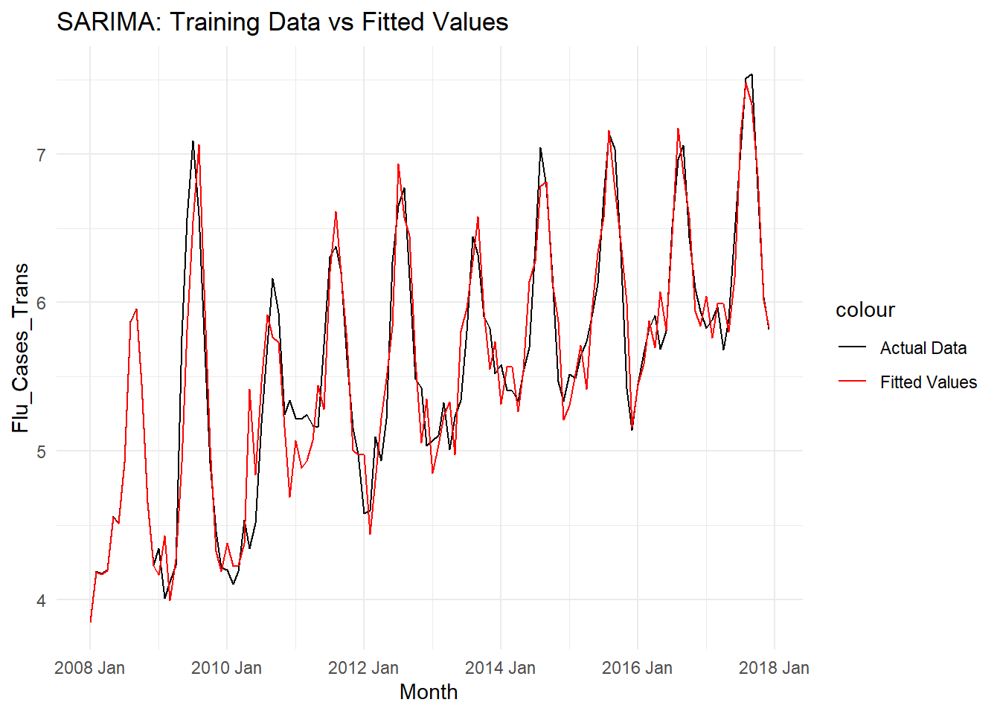
Figure 12: Fitted Values vs Actual Transformed Data (SARIMA)
Figure~\(\ref{fig:sarima-fitted}\) overlays the fitted SARIMA values on the transformed training data. The model captures the broad annual seasonal pattern. However, it appears to underestimate case numbers during certain periods between 2010 and 2011 and displays greater month-to-month variation than the observed series during non-peak periods.
ETS Parameter Estimates and Fitted Values
The selected exponential smoothing model was \[\text{ETS}(M,N,M).\] This notation indicates multiplicative errors, no explicit trend component, and multiplicative seasonality. The one-step-ahead observation equation is \[y_t = \ell_{t-1} s_{t-12} (1 + \varepsilon_t),\] where \(y_t\) is the observed monthly influenza count, \(\ell_{t-1}\) is the level estimated at the previous time step, \(s_{t-12}\) is the seasonal index from the corresponding month in the preceding year, and \(\varepsilon_t\) is the multiplicative error term.Level and seasonal updating are defined as \[\ell_t = \ell_{t-1}(1 + \alpha \varepsilon_t), \quad s_t = s_{t-12}(1 + \gamma \varepsilon_t).\] The \(h\)-step-ahead forecast is \[\hat{y}_{t+h\mid t} = \ell_t s_{t+h-12(k+1)},\] where \(k\) is the integer part of \((h-1)/12\).Parameter estimates for the fitted model are presented below:
Click to expand code
# model 4 coefficientsets_models |>select(model4) |>report()
The estimate of \(\alpha\) was close to one, indicating that the estimated level responds strongly to recent observations. The estimate of \(\gamma\) was close to zero, suggesting that the seasonal pattern changes slowly over time and is influenced more by historical seasonal information than by the most recent observation. The model contains 12 initial seasonal states because the data have an annual seasonal cycle of 12 months.
Click to expand code
# Plot fitted valuesets_models |>select(model4) |>augment() |>ggplot(aes(x = Month)) +geom_line(aes(y = Flu_Cases, color ="Actual Data")) +geom_line(aes(y = .fitted, color ="Fitted Values")) +scale_color_manual(values =c("Actual Data"="black", "Fitted Values"="blue")) +theme_minimal() +labs(title ="ETS: Training Data vs Fitted Values")
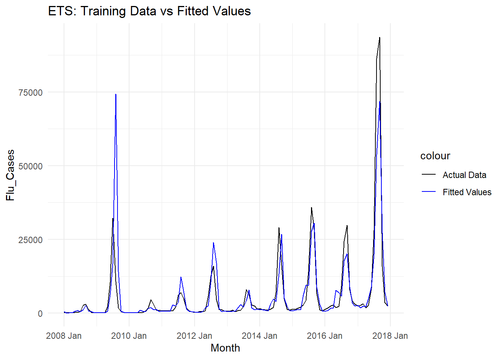
Figure 13: Fitted Values vs Actual Data (ETS)
Figure~\(\ref{fig:ets-fitted}\) overlays the fitted ETS values on the original training data. The model generally captures lower influenza-count periods, but it may overestimate or underestimate some major seasonal peaks. This is consistent with the residual diagnostics, which indicated that the model did not completely remove all autocorrelation.
Out-of-Sample Forecasting (2018–2019)
The selected SARIMA and ETS models were used to forecast the test period from January 2018 to December 2019. Four benchmark forecasting methods were also included: mean, naive, seasonal naive and drift forecasts. These benchmark methods provide simple reference points against which the more complex models can be assessed.
Because the SARIMA model was fitted to the log-transformed series, its forecasts were back-transformed to the original influenza-count scale before comparison with the observed test data and the ETS forecasts. All reported accuracy measures were calculated using the original monthly counts.
# Plot of forecast vs actual test datasarima_fc |>autoplot(train_trans) +autolayer(test_trans, Flu_Cases_Trans, color ="black") +labs(title ="SARIMA Forecast vs Actual (2018-2019)", y ="Log(Flu Cases)")ets_fc |>autoplot(train_data) +autolayer(test_data, Flu_Cases, color ="black") +labs(title ="ETS Forecast vs Actual (2018-2019)", y ="Flu Cases")
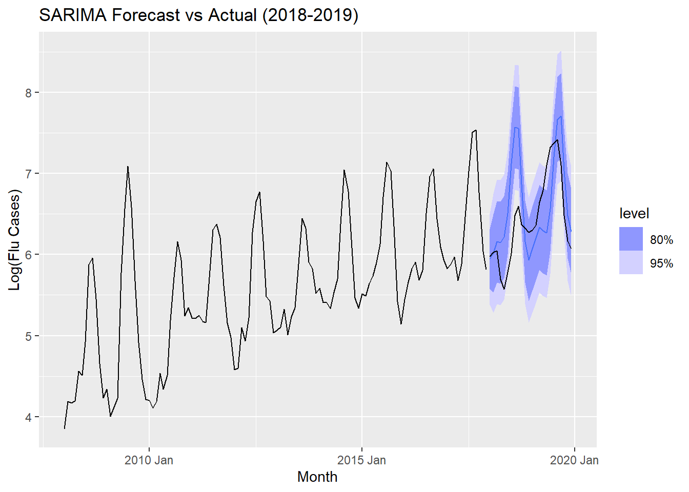
Figure 14: SARIMA and ETS Out-of-Sample Forecasts vs Test Data
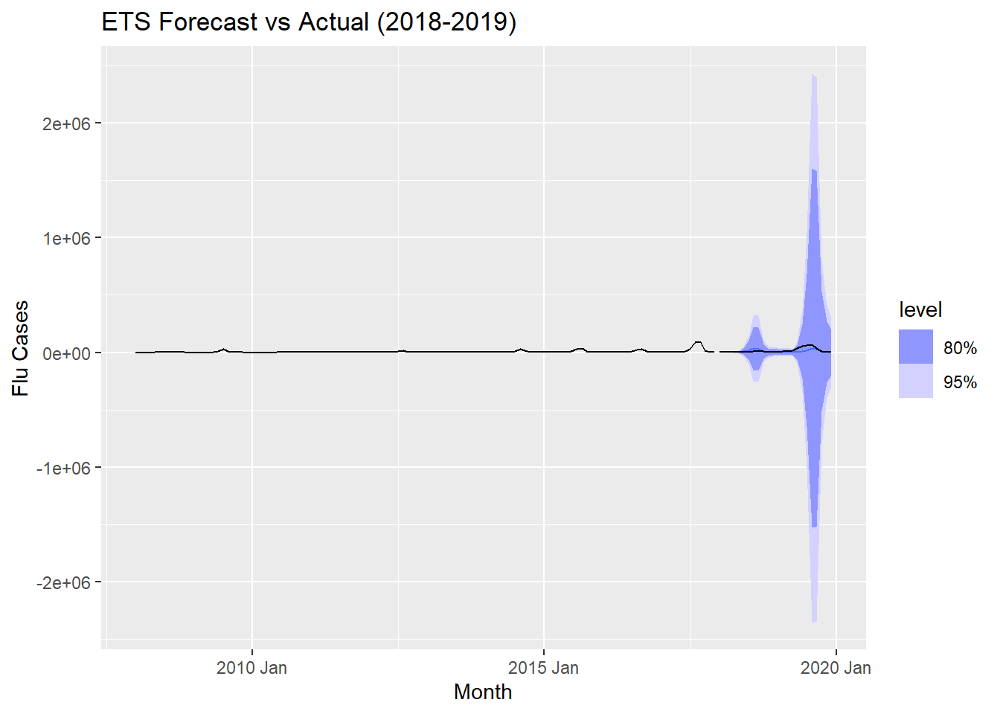
Figure 15: SARIMA and ETS Out-of-Sample Forecasts vs Test Data
Benchmarks vs model forecasts
The benchmark methods evaluated include mean, naive, seasonal naive, and drift models.
Click to expand code
benchmark_fc |>filter(.model =="Mean") |>autoplot(train_data) +autolayer(test_data, Flu_Cases, color ="black") +labs(title ="Mean Forecast vs Actual")benchmark_fc |>filter(.model =="Naive") |>autoplot(train_data) +autolayer(test_data, Flu_Cases, color ="black") +labs(title ="Naive Forecast vs Actual")benchmark_fc |>filter(.model =="Seasonal_Naive") |>autoplot(train_data) +autolayer(test_data, Flu_Cases, color ="black") +labs(title ="Seasonal Naive vs Actual")benchmark_fc |>filter(.model =="Drift") |>autoplot(train_data) +autolayer(test_data, Flu_Cases, color ="black") +labs(title ="Drift Forecast vs Actual")
Figure~\(\ref{fig:benchmark-forecasts}\) shows the benchmark forecasts against the observed test data. The seasonal naive forecast was visually closer to the observed data than the other benchmark methods, which is expected because the influenza data exhibit strong yearly seasonality. However, visual comparison alone is insufficient, so formal forecast accuracy measures were also used.
The SARIMA forecast plot shows the SARIMA forecasts and their 80% and 95% prediction intervals. The intervals covered many observed test values, although the model appears to overestimate influenza counts during parts of 2018. The prediction intervals widen during high-season periods, reflecting greater uncertainty when forecasting influenza peaks.
The ETS forecast plot shows the ETS forecasts and prediction intervals. The ETS model produced relatively narrow intervals during lower-incidence periods and wider intervals during seasonal peaks. This pattern reflects the greater uncertainty associated with forecasting periods in which influenza notifications are expected to increase substantially.
shows that ETS(M,N,M) achieved the lowest RMSE and MAE, making it the most accurate model according to these two measures. The drift model obtained the lowest MAPE. This difference is possible because RMSE, MAE and MAPE weight forecasting errors differently. RMSE gives greater weight to large errors, MAE treats all absolute errors equally and MAPE measures error relative to the observed value.
Although the selected SARIMA model achieved the strongest in-sample fit among the SARIMA candidates, it performed worst during the out-of-sample forecast comparison. This demonstrates that low AIC, AICC or BIC values do not guarantee the best future forecasting performance. A possible explanation is that the SARIMA model’s fitted dependence structure did not generalize well to the 2018–2019 period, particularly given the unusual behaviour of influenza notifications during that period.
Based on the out-of-sample results, the ETS(M,N,M) model was the best-performing model according to RMSE and MAE. However, the drift model performed best according to MAPE. Therefore, the conclusion that ETS was the best model should be stated with respect to the selected accuracy measures rather than as an unqualified claim.
Limitations and Reflection
Although the selected ETS(M,N,M) model achieved the lowest RMSE and MAE in the out-of-sample forecast comparison, it has important limitations. In particular, the selected model contains no explicit trend component. The exploratory analysis suggested that influenza notifications showed non-linear long-term variation, including substantial changes in particular years. Therefore, the selected model may not fully capture longer-term changes in influenza notification levels.
The unusually high influenza notification counts in 2009, 2017 and 2019 may also have affected model estimation and forecasting performance. These years contain observations that differ substantially from the usual seasonal pattern. Possible contributors include changes in circulating influenza strains, vaccination effectiveness, testing practices, healthcare-seeking behaviour and reporting. However, the dataset used in this project did not include variables that would allow these explanations to be tested directly.
The SARIMA and ETS residual diagnostics also indicated remaining autocorrelation. This suggests that time and seasonality alone were not sufficient to explain all variation in influenza notifications. With additional time, future work could investigate models that include external predictors, such as temperature, rainfall, vaccination coverage, influenza subtype, testing rates or state-level information. Modelling influenza notifications separately by state or influenza subtype may also reveal patterns hidden by the national aggregation used in this project.
The analysis was deliberately restricted to data from 2008 to 2019. Data from 2020 onward were excluded because the COVID–19 pandemic, public-health restrictions and changes in healthcare-seeking and testing behaviour could represent a structural break in the influenza series. Including this period without explicitly modelling such changes could distort the estimated seasonal patterns and lead to misleading forecasts.
Finally, the test set contained only 24 monthly observations. Although this provided two complete seasonal cycles, it is still a relatively short period for evaluating forecast performance. A longer dataset or rolling-origin forecast evaluation would provide stronger evidence about whether the ETS model consistently outperforms SARIMA and the benchmark methods.